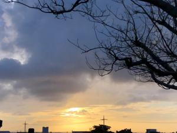

うるがいの話 ある日
最新: カローラうるがいとは 前提知識です
カニの画像をクリックすると『うるがいの話』サイトを表示します|
|
【うるがいの話】 うるがい(ｳﾙｶﾞｲ urugai)とは、『もずくがに』の名前でとても大きくなります。 |
|---|---|
|
|
【Got cat カミマヤーの話】 たながー（ﾀﾅｶﾞｰtanagaa）とは手長えびのことで、何種類かあり大きいのは車 エビぐらいになります。 |

|
【ぶながぁの話】 ぶながー(bunagaa)とは、赤い髪の毛、赤い身体、そして身長は１ｍ２０ｃｍ ぐらい、川の蟹を食べているの目撃された。場所は沖縄県国頭郡大宜味村のと ある村僕の隣近所に住んでいる爺さんから、聞いた話です。 |
|
|
【ギーマの話】 ギーマ(giima)とは、山原の里山に咲くスズランに似た、 花を付けます。実は食べられます、 気が付くと口の周りが紫になっています。 |
2021年10月07日 (木）カローラ
16:07

今朝も、エンジンからキュルキュル音がでる。先週の水曜日に一度だけ音がし
たが、その後は落ち着いていたので様子をみていた。そして、昨日も音がした
。トヨタに電話する、『車のエンジンから音が出る、みてもらえないですか』
『来週の月曜日にキャンセルの空きがあるのでどうせすか』、ムカ、止まった
らどうするのか、土曜日に長距離で運転しない用事があるのだが、一月前に点
検したばかりなのに（後で確認すると３カ月前だった）、担当のオクさんに相
談してと、無理やりオクさんに電話を替わってもらいオクさんに事情を話す。
近年、好感度が上がっているオクさん、私が見ますので今から来れますか、え
、１０分後で着きますとエンジンを起こすとエンジンからキュルキュル音がで
る、変な話だが安心する、ところが暫くすると音は消えた。もしかしたら、音
の現象がでないかも。トヨタに着き、オクさんにキーを渡す。オクさんがフロ
ントを開け、エンジンをかける、音がでない。オクさん、曰くファンベルトが
温まると、ゴムが伸びて音がでなくなります。フーン、土曜日に名護まで行け
れば（ウソ、そんなに遠いところへは行かない）、来週の修理でいいですよと
訴える。見ますね、とオクさん、１０分後、大丈夫です、音はなるかもしれな
いが直ぐに止まることはないです。では予約しておきますね、月曜日は休みで
すから、水曜日ですかね。ん、月曜日は休みではないですよ、前の担当者は月
曜日だと予約とれますと言っていますよ、カレンダーは１１日は休日になって
いるかもしれませんが・・・、オクさん、暫くして月曜日に予約しましたと回
答する。ん、カレンダーの影響ってあるんだと思った。トヨタに行くとき、走
行距離は確認すると１４万キロを指していた。そろそろ車を購入しなければい
けなくなった、お金は・・。